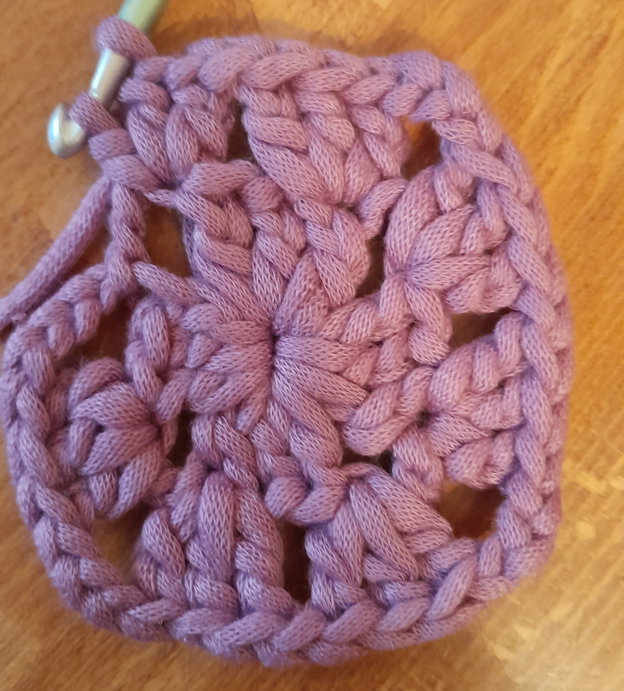

Cover porta libro

Top
Chi sono?Ciao, sono Arianna e ho 21 anni.Ho iniziato a fare all'uncinetto a Febbraio 2024 e da quella volta non ho più smesso. In questa pagina ho catalogato tutti i miei proggetti finiti con relative foto e pattern che ho seguito/ inventato. |

Il mio primo lavoro |
|---|
| Cover porta libro |
Top |
|---|